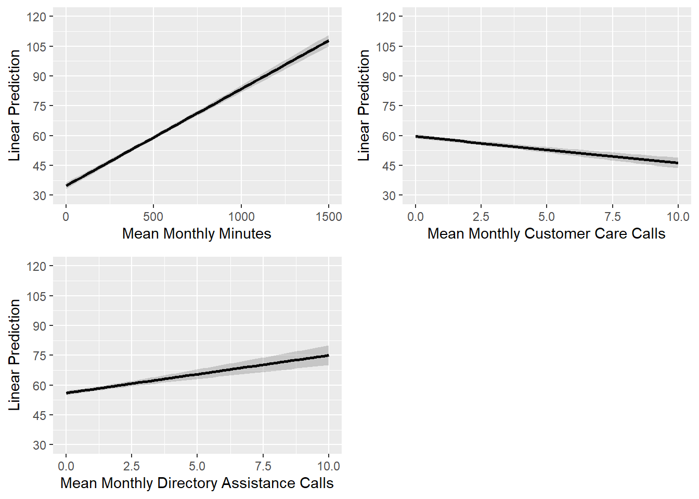

Topic 4 Targeting and Retaining Customers
4.1 R Packages and Datasets for Topic 4
library(cowplot) # Arrange plots in grid
library(ggplot2) # Advanced graphing capabilities
library(tidyr) # Easier programming
library(GGally) # Scatterplot matrix
library(flextable) # Better HTML Tables
library(htmlTable) # Better HTML Tables
library(jtools) # Concise regression results
library(dplyr) # Easier programming
library(caret) # Create data partitions
load("Topic04/bankmktg.rdata")
load("Topic04/telecom.rdata")4.2 Targeting Customers
- One-to-One Marketing
- Time consuming
- Costly
- Mass Marketing
- Customer needs not being met
- Target Marketing
- Market to those likely to…
4.2.1 Goal
Target customers with the highest likelihood of a favorable outcome using explanatory variables
- Outcome variable could be:
- Purchase
- Sales
- Costs
- Profitability
- CLV
- Explanatory variables could be:
- Demographics
- Behaviors
- Usage
- Lifestyles
The outcome variable will dictate the type of analysis we can perform
- Continuous outcome variables have a meaningful magnitude
- Use linear regression
- Categorical outcome variables do not have a meaningful magnitude
- Use logistic regression
4.3 Retaining Customers
Importance of retention:
Reducing defections \(5\%\) boosts profits \(25\%\) to \(85\%\). — Frederick F. Reichheld and W. Earl Sasser, Jr.
4.3.1 Goal
Identify factors (i.e., independent variables) that increase the likelihood of retention (or decrease the likelihood of churn)
- Retention (or Churn) is the outcome or dependent variable
- DV = Binary, so Method = Logistic Regression
4.4 Targeting Customers (Linear Regression) Example
4.4.1 Overview
- Customer revenue, usage, and demographics for a cell phone provider
- DV:
- Mean monthly revenue (prior 6 months),
avg6rev
- Mean monthly revenue (prior 6 months),
- IVs:
- Mean monthly minutes (prior 6 months),
avg6mou - Mean monthly customer care calls,
cc - Mean monthly directory assistance calls,
da - Mean monthly overage minutes,
ovrmou - Household income (dollars),
income - Own home (Yes; No),
own
- Mean monthly minutes (prior 6 months),
4.4.2 Summarize Data
- Useful to examine data prior to specifying the model
- Summary Statistics
Table 4.1: Summary Statistics (R code) Variable N Mean Std. Dev. Min Pctl. 25 Pctl. 75 Max 1 avg6rev 2382 57.361 45.108 2 33 68 726 2 avg6mou 2382 466.913 487.389 0 143 615.75 5321 3 cc 2382 1.494 3.767 0 0 1 62.667 4 da 2382 0.803 2.098 0 0 0.743 47.52 5 ovrmou 2382 41.11 105.045 0 0 36.5 2239.25 6 income 2382 63.54 35.537 10.006 38.414 82.608 179.572 7 own 2382 8 … No 709 29.8% 9 … Yes 1673 70.2% - Scatterplot Matrix (with Correlations)
)](_main_files/figure-html/t4scatmat01-1.png)
Figure 4.1: Scatterplot Matrix with Correlations (R code)
- Summary Statistics
4.4.3 Model Specification
- Goal: Determine what behaviors and demographics are associated with high revenue customers
- IVs are expected to be ones that are related to revenue
- Model: \(avg6rev=\alpha+\beta_1avg6mou+\beta_2cc+\beta_3da+\beta_4ovrmou+\beta_5income+\beta_6own\)
4.4.4 Model Interpretation
4.4.4.1 Results
Call:
lm(formula = avg6rev ~ avg6mou + cc + da + ovrmou + income +
own, data = telecom)
Residuals:
Min 1Q Median 3Q Max
-152.446 -10.334 -1.500 7.361 288.252
Coefficients:
Estimate Std. Error t value Pr(>|t|)
(Intercept) 31.421222 1.404375 22.374 < 2e-16 ***
avg6mou 0.048503 0.001378 35.209 < 2e-16 ***
cc -1.262511 0.149997 -8.417 < 2e-16 ***
da 1.924595 0.270331 7.119 1.43e-12 ***
ovrmou 0.177919 0.005825 30.545 < 2e-16 ***
income -0.012768 0.014377 -0.888 0.37456
ownYes -4.086334 1.117271 -3.657 0.00026 ***
---
Signif. codes: 0 '***' 0.001 '**' 0.01 '*' 0.05 '.' 0.1 ' ' 1
Residual standard error: 24.74 on 2375 degrees of freedom
Multiple R-squared: 0.6999, Adjusted R-squared: 0.6991
F-statistic: 923.2 on 6 and 2375 DF, p-value: < 2.2e-16\(avg6rev=31.421+.049avg6mou-1.263cc+1.925da+.178ovrmou-.013income-4.086own\)
4.4.4.2 Testing Overall Model Significance
- Relationship between DV and combined effects of IVs
- \(H_0: \text{all }\beta_k=0\) vs. \(H_a: \text{at least one }\beta_k\ne0\)
- Use F-statistic to test
- Conclusion: With a F-statistic of \(923.2\) and a \(p<.001\), we conclude that at least one \(\beta_k\) is significant
4.4.4.3 Assessing overall model fit
- How much variation in the DV is explained by the model
- Use \(R^2\) to assess
- Use Adjusted \(R^2\) to compare models
- Conclusion: Based on the \(R^2\), about \(70\%\) of the variance in
avg6revis explained by the model
4.4.4.4 Interpret Individual IVs
Relationship between DV and each IV
\(H_0: \beta_k=0\) vs. \(H_a: \beta_k\ne0\)
Interpret significant relationships
avg6mou- With \(p<.001\),
avg6mouhas a significant effect onavg6rev. - A one unit increase in
avg6mouis predicted to increaseavg6revby \(.049\) units.
- With \(p<.001\),
cc- With \(p<.001\),
cchas a significant effect onavg6rev. - A one unit increase in
ccis predicted to decreaseavg6revby \(1.263\) units.
- With \(p<.001\),
da- With \(p<.001\),
dahas a significant effect onavg6rev. - A one unit increase in
dais predicted to increaseavg6revby \(1.925\) units.
- With \(p<.001\),
ovrmou- With \(p<.001\),
ovrmouhas a significant effect onavg6rev. - A one unit increase in
ovrmouis predicted to increaseavg6revby \(.178\) units.
- With \(p<.001\),
own- With \(p<.001\),
ownhas a significant effect onavg6rev. - Those that own their home have \(4.086\) units less revenue per month than those that do not.
- With \(p<.001\),
A standardized \(\beta\) is the effect of a single standard deviation change in the IV on the DV
- Higher absolute values are more important
- Conclusion:
avg6mouis the biggest driver of avg6rev
Table 4.3: Standardized Beta Coefficients (R code)
Std.Beta
(Intercept)
0
avg6mou
0.5241
cc
-0.1054
da
0.0895
ovrmou
0.4143
income
-0.0101
ownYes
-0.0414
Sometimes helps to visually examine the IVs for interpretation
Plots can show predicted DV at different levels of IVs
Figure 4.2: Margin Plots for Significant IVs (R code)
)](_main_files/figure-html/t4marginplots02-1.png)
Figure 4.3: Margin Plots for Insignificant IV (R code)
Examine deciles of predicted values by the IVs
- Split sample into 10 groups based on predicted DV
- Look at mean values of IVs for each decile
Table 4.4: IVs by Predicted Deciles (R code)
yhat.dec
avg6rev
avg6mou
cc
da
ovrmou
income
own
1
140.72689
1,441.11345
3.3949580
3.23101892
234.0168067
62.12881
0.5420168
2
79.76891
889.08403
2.7549020
1.63544117
70.8102241
68.83508
0.5924370
3
65.66387
659.97479
2.3179272
0.94216386
45.9810924
66.31542
0.6344538
4
53.73950
482.93277
1.1218487
0.61043067
24.8613445
65.67794
0.5924370
5
50.24790
382.63445
1.0266106
0.54942227
15.8291316
64.91030
0.7016807
6
45.14706
296.78151
1.0462185
0.39620798
9.9705882
66.70466
0.6596639
7
40.24790
223.65966
0.8417367
0.26309874
5.3851541
58.92695
0.7352941
8
36.64706
149.87815
0.6442577
0.24438025
1.8823529
58.29429
0.7184874
9
33.23431
97.42678
0.5843794
0.12116109
1.9093445
61.43260
0.8577406
10
28.40586
48.94979
1.2078103
0.04349372
0.7845188
62.19047
0.9874477
4.4.5 Conclusion
Recall our Goal:
Determine what behaviors and demographics are associated with high revenue customers
What did we learn?
- We can identify our highest revenue customers by examining
avg6mou,cc,da,ovrmouandown - Our highest revenue customers consumer over \(1000\) minutes per month and have over \(200\) overage minutes per month
- More directory assistance calls and fewer customer care calls are associated with higher revenue
4.5 Targeting Customers (Logistic Regression)
4.5.1 Overview
- Bank marketing data for customers of a bank
- DV:
- Open term deposit account,
response
- Open term deposit account,
- IVs:
- Age,
age - Average Yearly Balance,
balance - Housing Loan (Yes, No),
housing - Personal Loan (Yes, No),
loan - Married (Yes, No),
married
- Age,
- Predict current customers likely to buy
- Use training (75%) and holdout (25%) samples
4.5.2 Estimation Results
Call:
glm(formula = response ~ age + balance + housing + loan + married,
family = "binomial", data = train)
Deviance Residuals:
Min 1Q Median 3Q Max
-0.8039 -0.4760 -0.4084 -0.3311 2.7149
Coefficients:
Estimate Std. Error z value Pr(>|z|)
(Intercept) -2.42502380 0.28108855 -8.627 < 2e-16 ***
age 0.02063143 0.00658090 3.135 0.00172 **
balance -0.00001342 0.00002360 -0.569 0.56962
housingYes -0.57512112 0.13736995 -4.187 0.0000283 ***
loanYes -0.67663138 0.22339652 -3.029 0.00245 **
marriedYes -0.57891627 0.14211504 -4.074 0.0000463 ***
---
Signif. codes: 0 '***' 0.001 '**' 0.01 '*' 0.05 '.' 0.1 ' ' 1
(Dispersion parameter for binomial family taken to be 1)
Null deviance: 1629.3 on 2652 degrees of freedom
Residual deviance: 1580.0 on 2647 degrees of freedom
AIC: 1592
Number of Fisher Scoring iterations: 5Model p-value = 0.0000 McFadden's Pseudo-Rsquared = 0.0303Parameter | OR Est | p | 2.5% | 97.5% |
(Intercept) | 0.0885 | 0.0000 | 0.0510 | 0.1535 |
age | 1.0208 | 0.0017 | 1.0078 | 1.0341 |
balance | 1.0000 | 0.5696 | 0.9999 | 1.0000 |
housingYes | 0.5626 | 0.0000 | 0.4298 | 0.7365 |
loanYes | 0.5083 | 0.0025 | 0.3281 | 0.7876 |
marriedYes | 0.5605 | 0.0000 | 0.4242 | 0.7405 |
4.5.3 Overall Model Fit
Based on the likelihood ratio test with p-value < .0001, the overall model is significant
McFadden’s Pseudo-\(R^2\) of .030 means that the model explains only about 3% of variation between buyers/non-buyers
Classification Matrix for Training Sample
What’s the problem?
Table 4.6: Classification Matrix for Training Sample (R code)
Confusion Matrix and Statistics Reference Prediction No Yes No 2409 244 Yes 0 0 Accuracy : 0.908 95% CI : (0.8964, 0.9188) No Information Rate : 0.908 P-Value [Acc > NIR] : 0.517 Kappa : 0 Mcnemar's Test P-Value : <2e-16 Sensitivity : 0.00000 Specificity : 1.00000 Pos Pred Value : NaN Neg Pred Value : 0.90803 Prevalence : 0.09197 Detection Rate : 0.00000 Detection Prevalence : 0.00000 Balanced Accuracy : 0.50000 'Positive' Class : Yes PCC = 83.30%Sensitivity/Specificity Plot
)](_main_files/figure-html/t4sensspec01-1.png)
Figure 4.4: Sensitivity/Specificity Plot for Training Sample (R code)
Classificaiton Matrix for Holdout Sample
Table 4.7: Classification Matrix for Training Sample with 0.1 Cutoff (R code)
Confusion Matrix and Statistics Reference Prediction No Yes No 1540 107 Yes 869 137 Accuracy : 0.6321 95% CI : (0.6134, 0.6505) No Information Rate : 0.908 P-Value [Acc > NIR] : 1 Kappa : 0.0835 Mcnemar's Test P-Value : <2e-16 Sensitivity : 0.56148 Specificity : 0.63927 Pos Pred Value : 0.13618 Neg Pred Value : 0.93503 Prevalence : 0.09197 Detection Rate : 0.05164 Detection Prevalence : 0.37919 Balanced Accuracy : 0.60037 'Positive' Class : Yes PCC = 83.30%Classification Matrix for Holdout Sample
- Results very similar for holdout sample
Table 4.8: Classification Matrix for Holdout Sample with 0.1 Cutoff (R code)
Confusion Matrix and Statistics Reference Prediction No Yes No 527 37 Yes 275 44 Accuracy : 0.6467 95% CI : (0.6141, 0.6782) No Information Rate : 0.9083 P-Value [Acc > NIR] : 1 Kappa : 0.0863 Mcnemar's Test P-Value : <2e-16 Sensitivity : 0.54321 Specificity : 0.65711 Pos Pred Value : 0.13793 Neg Pred Value : 0.93440 Prevalence : 0.09173 Detection Rate : 0.04983 Detection Prevalence : 0.36127 Balanced Accuracy : 0.60016 'Positive' Class : Yes PCC = 83.34%ROC Curve for Holdout Sample
- Area between \(.5\) and \(.7\) suggests poor model fit
)](_main_files/figure-html/t4roctest1-1.png)
Figure 4.5: ROC Curve for Test/Holdout Sample (R code)
4.5.4 Interpreting Coefficients
ageis positive (\(OR>1\)) and significant (\(p=.0017\))- \(1\) year increase in age increases odds of buying by a factor of \(1.021\) (or odds of buying increase by \(2.1\%\))
marriedis negative (\(OR<1\)) and significant (\(p<.0001\))- Being married decreases odds of buying by factor of \(.56\) (or odds of buying decrease by \(44\%\))
housingis negative (\(OR<1\)) and significant (\(p<.0001\))- Having a home loan decreases odds of buying by factor of \(.56\) (or odds of buying decrease by \(44\%\))
loanis negative (\(OR<1\)) and significant (\(p=.0025\))- Having a personal loan decreases odds of buying by factor of \(.50\) (or odds of buying decrease by \(50\%\))
4.5.5 Interpreting Coefficients Visually
)](_main_files/figure-html/t4lrmarginplots-1.png)
Figure 4.6: Margin Plots for Age at Different Factor Levels (R code)
4.5.6 Gain Chart
Contacting top \(20\%\) of predicted buyers yields about \(40\%\) of actual buyers
Contacting top \(30\%\) of predicted buyers yields about \(52\%\) of actual buyers
)](_main_files/figure-html/t4gainlift01-1.png)
Figure 4.7: Gain Chart (R code)
4.5.7 Lift Chart
- Contacting top \(20\%\) of predicted buyers provides a lift of about \(2\)
)](_main_files/figure-html/t4gainlift02-1.png)
Figure 4.8: Lift Chart (R code)
4.5.8 Conclusion
Recall our goal:
- Predict current customers likely to buy
What did we learn?
- We can identify those more likely to buy by examining
age,married,housing, andloan - By targeting those customers that are more likely to purchase, we can better spend our limited resources
4.6 Suggested Readings
- Marketing Data Science (2015). Miller, Thomas W.
- BGSU Library Link:
http://maurice.bgsu.edu:2083/record=b41416968~S0 - eBook through BGSU Library:
https://learning.oreilly.com/library/view/marketing-data-science/9780133887662/?ar=
Note: Might need to create an account; select “Not Listed. Click here” from the “Select your institution” drop down box. Use your BGSU email to create the account. - Chapter 3: Targeting Current Customers
- BGSU Library Link:
4.7 R Code
Figure 4.1
# Need to detach package 'cowplot' to prevent an error
detach("package:cowplot", unload = TRUE)
ggpairs(telecom[,1:6], # Dataset
lower=list(continuous=
wrap("smooth",
method="lm",
se=FALSE, # Add fit line
color="midnightblue")), # Set dot color
diag=list(continuous="blankDiag")) # Set diagonals to be blank
# Reload 'cowplot'
library(cowplot)Figure 4.2
# Want to predict for different levels of IVs
# Because we often do this for other continuous variables, we first
# create a df with mean values of all continuous IVs
# at different levels of the factor variable (if there are any)
# NOTE: variable names must be EXACTLY the same as in model
m.ivs <- telecom %>%
group_by(own) %>%
summarise(avg6mou=mean(avg6mou, na.rm=TRUE),
cc=mean(cc, na.rm=TRUE),
da=mean(da, na.rm=TRUE),
ovrmou=mean(ovrmou, na.rm=TRUE),
income=mean(income, na.rm=TRUE))
# Create dataframe for prediction at different levels of 'avg6mou'
a6m.pred <- merge(data.frame(avg6mou=seq(0,1500,100)), # variable of interest
m.ivs[,c("cc", "da", "ovrmou", "income", "own")])
# Use model results to predict dv for values in 'a6m.pred' data frame
# Predicted values and CIs get appended to data frame
# New variables are called:
# 'p$fit' = linear prediction from model
# 'p$lwr' = lower confidence interval for prediction
# 'p$upr' = upper confidcent interval for prediction
a6m.pred$p <- as.data.frame(
predict.lm(target,
a6m.pred,
interval="confidence"))
# Use ggplot to create margin plot
p1 <- ggplot(aes(x=avg6mou, y=p$fit, color=own), data=a6m.pred) +
geom_line(size=1) +
geom_ribbon(aes(ymin=p$lwr, ymax=p$upr, fill=own), alpha=0.2) +
labs(x="Mean Monthly Minutes", y="Linear Prediction",
fill="Own", color="Own") +
scale_y_continuous(limits=c(30,120), breaks=seq(30,120,15),
minor_breaks=NULL) +
theme(legend.position="none")
# Repeat for variable 'cc'
cc.pred <- merge(data.frame(cc=seq(0,10,1)), # variable of interest
m.ivs[,c("avg6mou", "da", "ovrmou", "income", "own")])
cc.pred$p <- as.data.frame(predict.lm(target, cc.pred,
interval="confidence"))
p2 <- ggplot(aes(x=cc, y=p$fit, color=own), data=cc.pred) +
geom_line(size=1) +
geom_ribbon(aes(ymin=p$lwr, ymax=p$upr, fill=own), alpha=0.2) +
labs(x="Mean Monthly Customer Care Calls", y="Linear Prediction") +
scale_y_continuous(limits=c(30,120), breaks=seq(30,120,15),
minor_breaks=NULL) +
theme(legend.position="none")
# Repeat for variable 'da'
da.pred <- merge(data.frame(da=seq(0,10,1)), # variable of interest
m.ivs[,c("cc", "avg6mou", "ovrmou", "income", "own")])
da.pred$p <- as.data.frame(predict.lm(target, da.pred,
interval="confidence"))
p3 <- ggplot(aes(x=da, y=p$fit, color=own), data=da.pred) +
geom_line(size=1) +
geom_ribbon(aes(ymin=p$lwr, ymax=p$upr, fill=own), alpha=0.2) +
labs(x="Mean Monthly Directory Assistance Calls",
y="Linear Prediction") +
scale_y_continuous(limits=c(30,120), breaks=seq(30,120,15),
minor_breaks=NULL) +
theme(legend.position="none")
# Repeat for variable 'ovrmou'
om.pred <- merge(data.frame(ovrmou=seq(0,300,25)), # variable of interest
m.ivs[,c("cc", "da", "avg6mou", "income", "own")])
om.pred$p <- as.data.frame(predict.lm(target, om.pred,
interval="confidence"))
p4 <- ggplot(aes(x=ovrmou, y=p$fit, color=own), data=om.pred) +
geom_line(size=1) +
geom_ribbon(aes(ymin=p$lwr, ymax=p$upr, fill=own), alpha=0.2) +
labs(x="Mean Monthly Overage Minutes",
y="Linear Prediction") +
scale_y_continuous(limits=c(30,120), breaks=seq(30,120,15),
minor_breaks=NULL) +
theme(legend.position="none")
# Save Plots to a grid object using 'cowplot'
pgrid <- plot_grid(p1, p2, p3, p4, nrow=2)
# Extract legend from first plot
legend <- get_legend(p1 + theme(legend.position="bottom"))
# Combine plot object and legend in a single column
plot_grid(pgrid, legend, ncol=1, rel_heights=c(1,.1))Figure 4.3
# Create dataframe for prediction at different levels of 'avg6mou'
inc.pred <- merge(data.frame(income=seq(10,200,10)), # variable of interest
m.ivs[,c("cc", "da", "ovrmou", "avg6mou", "own")])
# Use model results to predict dv for values in 'a6m.pred' data frame
# Predicted values and CIs get appended to data frame
# New variables are called:
# 'p$fit' = linear prediction from model
# 'p$lwr' = lower confidence interval for prediction
# 'p$upr' = upper confidcent interval for prediction
inc.pred$p <- as.data.frame(
predict.lm(target,
inc.pred,
interval="confidence"))
# Use ggplot to create margin plot
ggplot(aes(x=income, y=p$fit, color=own), data=inc.pred) +
geom_line(size=1) +
geom_ribbon(aes(ymin=p$lwr, ymax=p$upr, fill=own), alpha=0.2) +
labs(x="Income (000s)", y="Linear Prediction",
fill="Own", color="Own") +
scale_y_continuous(limits=c(30,120), breaks=seq(30,120,15),
minor_breaks=NULL) +
theme(legend.position="bottom")Figure 4.6
# Create df will mean values of continuous IVs at levels of factor IVs
m.ivs <- train %>%
group_by(housing, loan, married) %>%
summarise(age=mean(age, na.rm=TRUE),
balance=mean(balance, na.rm=TRUE))
# Create new data for prediction with 'age' as focus
age.pred <- merge(data.frame(age=seq(15,85,5)),
m.ivs[ ,c("housing", "loan", "married", "balance")])
# Create data frame with predicted values and confidence bands
train.pred <-
cbind(age.pred, # 'cbind' combines objects by columns
predict(tgt.log, # Model to predict values with
age.pred, # New data to use for IVs
type="link", # Return log-odds predictions
se=TRUE)) %>% # Get std.err. for CIs
mutate(pred=plogis(fit), # Calculate pr(response)
upr=plogis(fit+(qnorm(0.975)*se.fit)), # Upper CI
lwr=plogis(fit-(qnorm(0.975)*se.fit))) # Lower CI
# Create plot grid with separate lines for 'housing'
ggplot(aes(x=age, y=pred), data=train.pred) +
geom_line(aes(color=housing), size=1) +
geom_ribbon(aes(ymin=lwr, ymax=upr,
color=housing, fill=housing), alpha=.2) +
scale_y_continuous("Pr(Response)",limits=c(0,.5)) +
theme(legend.position="bottom") +
# 'facet-grid' creates separate plots in a grid of factor variable levels
facet_grid(rows=vars(married), cols=vars(loan),
labeller=labeller(married=as_labeller(c("No"="Married: No",
"Yes"="Married: Yes")),
loan=as_labeller(c("No"="Personal Loan: No",
"Yes"="Personal Loan: Yes"))),
switch="y") +
labs(x="Age", color="Housing Loan", fill="Housing Loan")Figure 4.7
# Load user-defined object 'gainlift'
source("Topic03/gainlift.R")
# Call the function and assign to object named 'glresults'
glresults <- gainlift(tgt.log, # Name of the glm results object
train, # Name of the training data frame
test, # Name of the testing data frame
"Yes") # Level that represents success/true
# Output gainplot
glresults$gainplotFigure 4.8
# Output liftplot
glresults$liftplotTable 4.1
summary(telecom)Table 4.2
target <- lm(avg6rev ~ avg6mou + cc + da + ovrmou + income + own,
data=telecom)
summary(target)Table ??
# Use user-defined function 'lm_beta.R'
source("Topic02/lm_beta.R")
htmlTable(lm_beta(target, digits=4))Table 4.4
telecom %>%
cbind(., yhat=fitted(target)) %>% # Append fitted values to data
mutate(yhat.dec=11-ntile(yhat, 10), # Create deciles, but reverse order
own=as.numeric(own)-1) %>% # Covert own to 1=yes, 0=no
group_by(yhat.dec) %>% # Group by decile
summarise(across(avg6rev:own,
~mean(.x, na.rm=TRUE))) %>% # Calculate mean of each IV
flextable() # Nice tableTable 4.5
# Use 'caret' package to create training and test/holdout samples
library(caret)
# This will create two separate dataframes: train and test
set.seed(9999)
inTrain <- createDataPartition(y=bankmktg$response, p=.75, list=FALSE)
train <- bankmktg[inTrain,]
test <- bankmktg[-inTrain,]
# Estimate using training sample
tgt.log <- glm(response ~ age + balance + default + housing + educ +
loan + married, data=train, family="binomial")
summary(tgt.log)
# Get p-value
p <- with(tgt.log, pchisq(null.deviance - deviance,
df.null-df.residual,
lower.tail=FALSE))
cat("Model p-value =",sprintf("%.4f",p),"\ ")
# Calculate McFadden's R-sq
Mrsq <- 1-tgt.log$deviance/tgt.log$null.deviance
cat("McFadden's Pseudo-Rsquared = ", round(Mrsq, digits=4))
# Use the 'or_table.R' user-defined script to get Odds Ratio estimates
source("Topic03/or_table.R")
flextable(or_table(tgt.log))